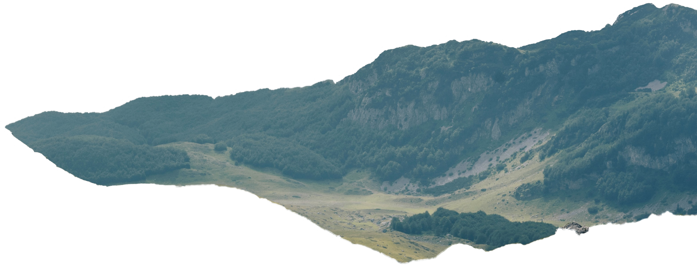
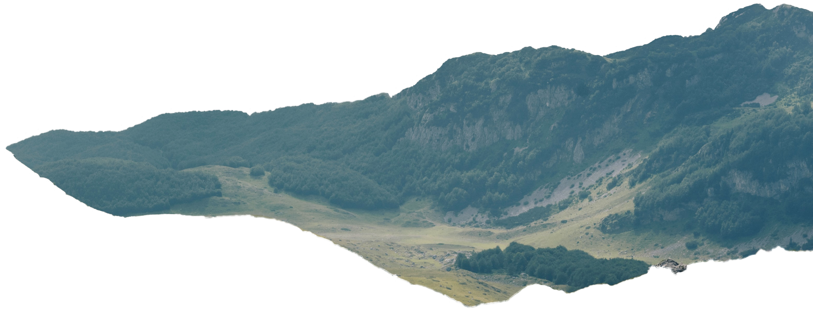
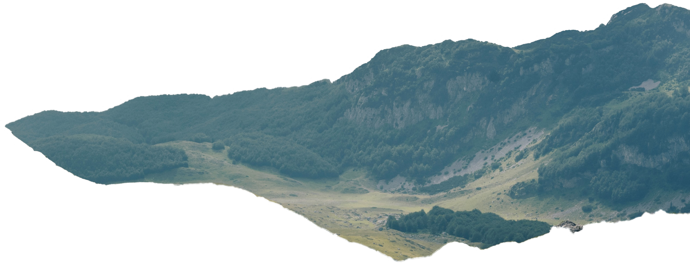

Nature is Calm
This is my parallax effect testing website


 


This is my parallax effect testing website

Nature is all the animals, plants, and other things in the world that are not made by people, and all the events and processes that are not caused by people. The most amazing thing about nature is its infinite variety.
As we journey through the mountains, we discover the beauty of untouched landscapes. Each step reveals new wonders, from cascading waterfalls to ancient forests that have stood the test of time.

Hidden within nature's embrace are secrets waiting to be discovered. The gentle rustle of leaves, the whisper of the wind, and the symphony of wildlife create a harmony that soothes the soul.
In the quiet moments of reflection, we find peace in nature's embrace. The setting sun paints the sky in hues of gold and purple, reminding us of the beauty that surrounds us every day.